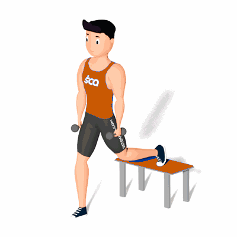

Agachamento Búlgaro

O agachamento búlgaro é um exercício de nível avançado de dificuldade, que tem o seu foco voltado para a questão da força e trabalha músculos como os quadríceps, os glúteos e os deltoides. O exercício funciona como uma boa alternativa para quem deseja engrossar as coxas e também contribui com o aumento da flexibilidade do corpo, além de colaborar com a construção muscular.
Ficha Técnica
Tipo: Musculação
Grupo Muscular: Perna
Aparelho: Nenhum
Músculos: Nenhum
Como realizar
- Comece o exercício em pé, com o corpo reto e os pés alinhados com os ombros;
- Segure um haltere em cada uma das mãos, levantando os braços na horizontal, para ficar com os halteres bem acima da cabeça;
- Em seguida, coloque um pé na frente do corpo e o outro atrás, em cima de um banco. Desse modo, posicione a ponta do pé no banco com a sola apontada para cima;
- Mantenha o tronco ereto e abaixe lentamente, flexionando o joelho da perna que não está no banco até formar um ângulo de 90º e o joelho de trás alguns centímetros acima do chão;
- Faça o número determinado de repetições e depois realiza o movimento com a outra perna.
 RC STORE
RC STORE